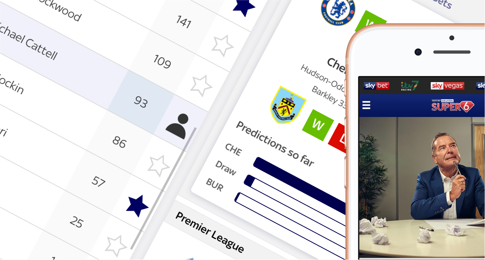
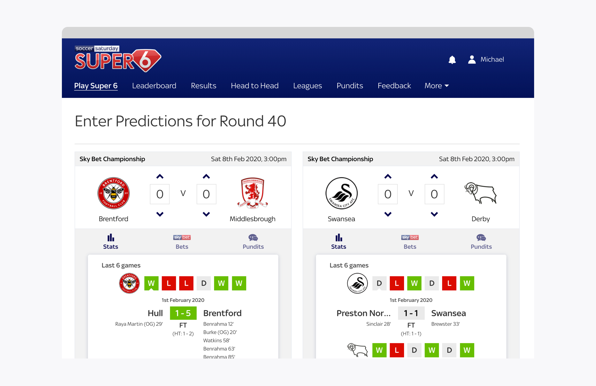
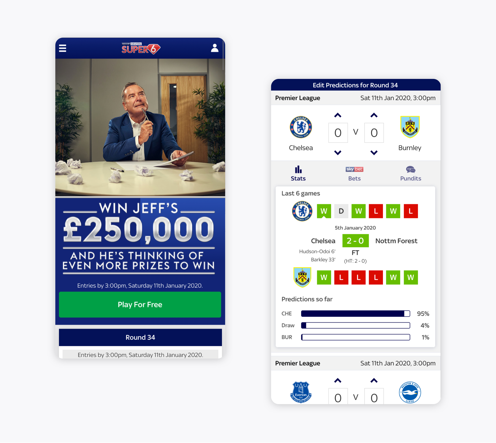
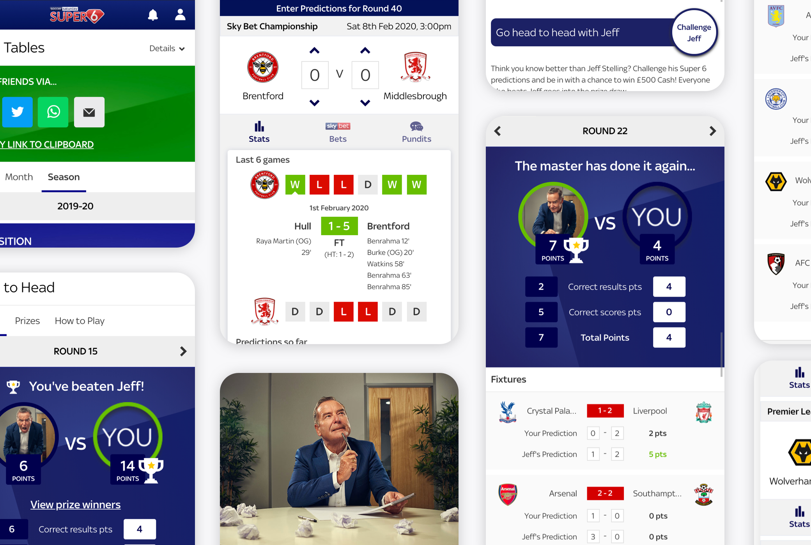

<section>
    <div class="wrapper">
        <div class="grid-full">


<h1 class="ralph">Sky Sports - Soccer Saturday Super 6</h1>

<div class="marginbottom--m"></div>    
    
</div>
<div class="marginbottom--l"></div>
<div class="grid-half">
    <h3 class="emma">The Problem</h3>
    <p>I was tasked to help create a leading digital mobile experience.<br>
    There was a need to align the brand with Sky Sports, then to increase retention amongst users on one of the country’s most popular "free-to-play" games. Working on gameplay, and reacting on user-frustrations.</p>
</div>

<div class="grid-half">
    <h3 class="emma">The Solution</h3>
    <p>An app that works hand-in-hand with Sky Sports Soccer Saturday program, coupled with added new features and simplier gameplay, providing a quick and easy way to play the game and share amongst friends.</p> 
</div>

<div class="grid-full">
    <h3 class="emma">My Responsibilites</h3>
    <p>Website and app strategy, research, prototype, lead facilitation of workshops, design, provide a platform for feedback, handover to developers</p>
    <h3 class="emma">Site Link</h3>
    <p><a href="https://super6.skysports.com/">Sky Sports Super 6</a></p>    
    <h3 class="emma">The Process</h3>
    <p>Before diving into wireframes, mockups, and build, I worked heavily with the User Researcher to start running research and user sessions to find out where the frustrations and struggles were with the current implementation of the app.</p>
    <p>We found a lot of the issues were around lack of information and data (the user would leave the app to find out past scores and form of the teams), navigation around the site - being unsure about how to quickly predict scores or see past results and we also found out they would like “more of the show in the app” - this opened the door to a lot of possibilities, and allowed us to run a really effective workshop with users and stakeholders.</p>
    <div class="marginbottom--m"></div>
    
    <div class="marginbottom--m"></div>    
    <p>I facilitated a workshop with all key stakeholders, which provided context of the opportunity we had to really “shake” the game up and add some new energy as well aligning teams to work together better and finally - come up with some brilliant ideas. The main idea was the winner, go Head to Head with the main show’s presenter - Jeff Stelling. We decided upon an MVP, and delivered it within 6 weeks for launch of the new season.</p>
    <p>Initial stats proved 35% of traffic went to the Head to Head page and challenged Jeff, which was decided to be a success (we were looking for over 25%) and as a bonus, social media traffic also raised.Version two of the Head to Head page lead to a huge increase to 83% uplift in traffic to Head to Head page.Couple this to increase in traffic to the app and great reviews, it was a huge success.</p>
    <p>To confirm this success, the App also was <strong>Number 1 within the Apple Store</strong>.</p>
</div>

    <div class="marginbottom--m"></div>
    
    <div class="marginbottom--m"></div>
    

<div class="marginbottom--xl"></div>

<div class="grid-full col">
  <div class="CrossPageNavigation">
    <div class="grid-full">
      <div class="CrossPageNavigationPrevious">
        <strong>Go to the next case study</strong><br />
          <a href="mad-2020.html">Mark and Andrew Developments</a>
      </div>
    </div>
  </div>
</div>

</div>
</div>
</section>
